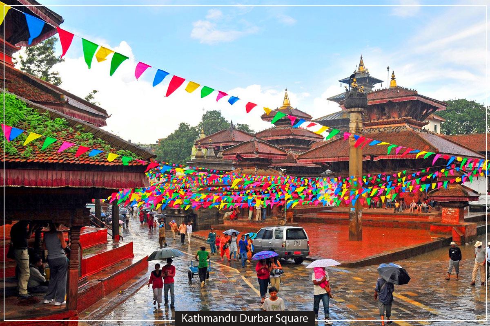

Kathmandu, the capital city of Nepal, is renowned for its rich cultural heritage and historical significance. The city is home to numerous UNESCO World Heritage Sites, showcasing a blend of ancient architecture, religious monuments, and vibrant traditions. From the majestic Durbar Squares to the sacred temples and stupas, Kathmandu offers a glimpse into the artistic and spiritual legacy of the region.
Key Heritage Sites:
Patan Durbar Square
Patan Durbar Square: Known for its stunning temples and rich history, it reflects the artistic achievements of the Malla kings.
Boudhanath Stupa
Bouddhanath Stupa: One of the largest stupas in Nepal, a significant pilgrimage site for Buddhists.
Pashupatinath Temple
Pashupatinath Temple: A sacred Hindu temple complex dedicated to Lord Shiva, located on the banks of the Bagmati River.
The Monkey TempleSwayambhunath Stupa (Monkey Temple): An ancient religious complex perched atop a hill, offering panoramic views of the city.
Kathmandu Durbar SquareKathmandu Durbar Square: A historic square surrounded by palaces, temples, and courtyards, showcasing exquisite Newari architecture.
Changu Narayan Temple
Changu Narayan Temple: It is situated in the Changu village that is believed to be as one of the most ancient templs of Kathmandu valley.
Bhaktapur Durbar Square
Bhaktapur Durbar Square: It is the main focus of Bhaktapur sightseeing. It is situated in the middle of Bhaktapur city. it is best collections of medieval arts of Nepal
Narayanhiti Palace Museum: The Narayanhiti Palace Museum was home to the royal family until a revolution took over the monarchy in 2006.
Museum of Nepal art
Museum of Nepal Art:The mission of the Museum of Nepali Art is to collect, preserve, document, research, and exhibit Nepali art and artistic practices. It aims to educate visitors on Nepali art leading to an understanding, appreciation and the promotion of our artistic heritage.”
The Taragoan Museum
The Taragoan Museum: The Taragoan Musuem sits about a 10-minute walk from Boudhanath Temple (mentioned below). It’s off the beaten path, and it seems few people even know of its existence which is what makes it one of the more unique places to visit in Kathmandu.
Narayanthan Temple (Sleeping Vishnu)
Narayanthan Temple (Sleeping Vishnu): Located in Budhanilkantha, the sleeping Vishnu is considered the largest stone carving in Nepal. Lord Vishnu is considered the preserver. His counterparts are Shiva (the destroyer) and Brahma (the creator). The carving is in a small pond just below Shivapuri National Park on the outskirts of Kathmandu.